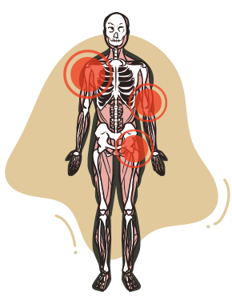

A localização da osteoartrose é outro ponto fundamental do diagnóstico e da conduta terapêutica, considerando que cada articulação específica tem fatores de estresse articular, impactos sobre a qualidade de vida e abordagens terapêuticas distintas. Diferentes articulações podem ter aspectos diagnósticos e evolutivos diferentes.
